NEOPLE PLAYER 2027 / RESEARCH ARCHIVE
던전앤파이터 모바일
업데이트 이력 연구
2022.03.24 정식 출시부터 2026.11.25까지 — 주요 레벨 확장, 레이드, 던전 콘텐츠, 캐릭터 및 성장 시스템의 변화 기록
28슬라이드
2022—26조사 범위
46출처 번호
11.252026년 기준일
이 자료는 주요 업데이트를 정리한 조사본으로, 모든 정기 패치의 전수 목록은 아닙니다. 발표·예정 사항은 적용 완료와 구분하여 표기했습니다.
RESEARCH MATERIAL연대별 기록 및 시스템별 분석
28개 페이지소개 · UPDATE HISTORY
던전앤파이터 모바일
01 / 28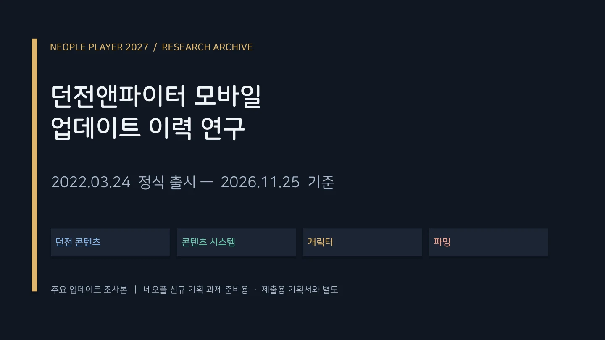
슬라이드 내용 텍스트 보기 ⌄
던전앤파이터 모바일 업데이트 이력 연구 2022.03.24 정식 출시 — 2026.11.25 기준 던전 콘텐츠 콘텐츠 시스템 캐릭터 파밍 주요 업데이트 조사본 | 네오플 신규 기획 과제 준비용 · 제출용 기획서와 별도
연구 개요 · UPDATE HISTORY
자료 범위와 활용 방법
02 / 28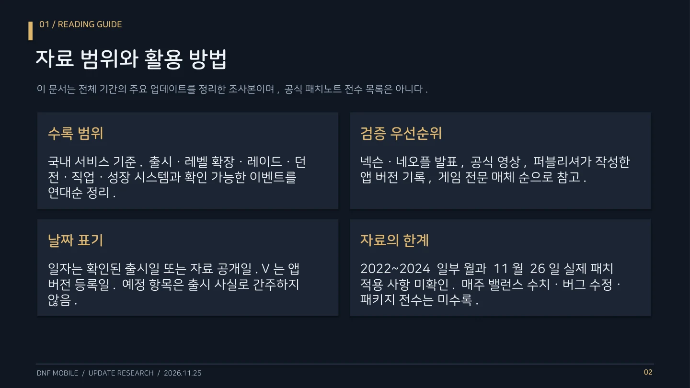
슬라이드 내용 텍스트 보기 ⌄
자료 범위와 활용 방법 이 문서는 전체 기간의 주요 업데이트를 정리한 조사본이며, 공식 패치노트 전수 목록은 아니다. DNF MOBILE / UPDATE RESEARCH / 2026.11.25 02 수록 범위 국내 서비스 기준. 출시·레벨 확장·레이드·던전·직업·성장 시스템과 확인 가능한 이벤트를 연대순 정리. 검증 우선순위 넥슨·네오플 발표, 공식 영상, 퍼블리셔가 작성한 앱 버전 기록, 게임 전문 매체 순으로 참고. 날짜 표기 일자는 확인된 출시일 또는 자료 공개일. V는 앱 버전 등록일. 예정 항목은 출시 사실로 간주하지 않음. 자료의 한계 2022~2024 일부 월과 11월 26일 실제 패치 적용 사항 미확인. 매주 밸런스 수치·버그 수정·패키지 전수는 미수록.
연구 개요 · UPDATE HISTORY
레벨 확장으로 보는 서비스 흐름
03 / 28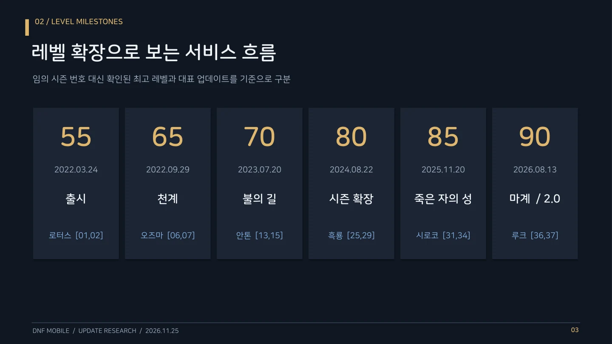
슬라이드 내용 텍스트 보기 ⌄
레벨 확장으로 보는 서비스 흐름 임의 시즌 번호 대신 확인된 최고 레벨과 대표 업데이트를 기준으로 구분 DNF MOBILE / UPDATE RESEARCH / 2026.11.25 03 55 2022.03.24 출시 로터스 [01,02] 65 2022.09.29 천계 오즈마 [06,07] 70 2023.07.20 불의 길 안톤 [13,15] 80 2024.08.22 시즌 확장 흑룡 [25,29] 85 2025.11.20 죽은 자의 성 시로코 [31,34] 90 2026.08.13 마계 / 2.0 루크 [36,37]
2022 · UPDATE HISTORY
2022 상반기 | 출시와 첫 레이드
04 / 28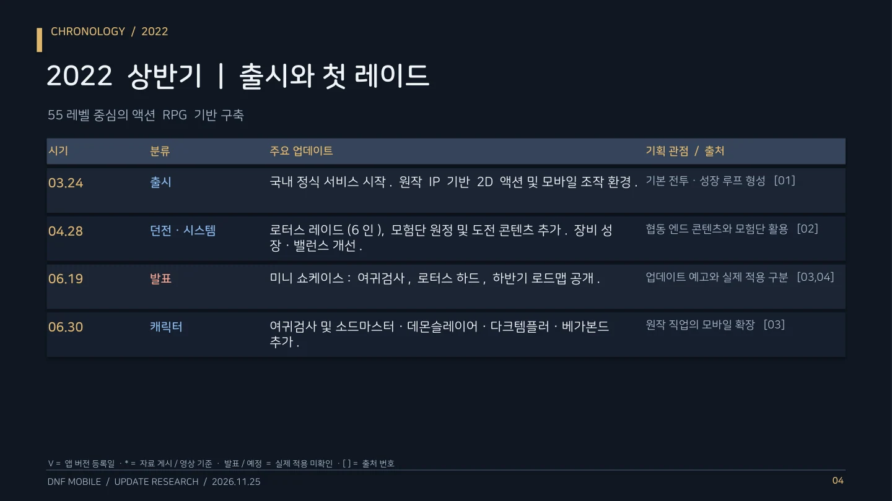
슬라이드 내용 텍스트 보기 ⌄
2022 상반기 | 출시와 첫 레이드 55레벨 중심의 액션 RPG 기반 구축 DNF MOBILE / UPDATE RESEARCH / 2026.11.25 04 시기 분류 주요 업데이트 기획 관점 / 출처 03.24 출시 국내 정식 서비스 시작. 원작 IP 기반 2D 액션 및 모바일 조작 환경. 기본 전투·성장 루프 형성 [01] 04.28 던전·시스템 로터스 레이드(6인), 모험단 원정 및 도전 콘텐츠 추가. 장비 성장·밸런스 개선. 협동 엔드 콘텐츠와 모험단 활용 [02] 06.19 발표 미니 쇼케이스: 여귀검사, 로터스 하드, 하반기 로드맵 공개. 업데이트 예고와 실제 적용 구분 [03,04] 06.30 캐릭터 여귀검사 및 소드마스터·데몬슬레이어·다크템플러·베가본드 추가. 원작 직업의 모바일 확장 [03] V = 앱 버전 등록일 · * = 자료 게시/영상 기준 · 발표/예정 = 실제 적용 미확인 · [ ] = 출처 번호
2022 · UPDATE HISTORY
2022 하반기 | 65레벨과 독자 IP
05 / 28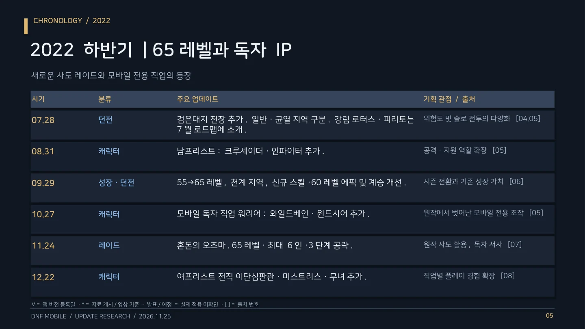
슬라이드 내용 텍스트 보기 ⌄
2022 하반기 | 65레벨과 독자 IP 새로운 사도 레이드와 모바일 전용 직업의 등장 DNF MOBILE / UPDATE RESEARCH / 2026.11.25 05 시기 분류 주요 업데이트 기획 관점 / 출처 07.28 던전 검은대지 전장 추가. 일반·균열 지역 구분. 강림 로터스·피리토는 7월 로드맵에 소개. 위험도 및 솔로 전투의 다양화 [04,05] 08.31 캐릭터 남프리스트: 크루세이더·인파이터 추가. 공격·지원 역할 확장 [05] 09.29 성장·던전 55→65레벨, 천계 지역, 신규 스킬·60레벨 에픽 및 계승 개선. 시즌 전환과 기존 성장 가치 [06] 10.27 캐릭터 모바일 독자 직업 워리어: 와일드베인·윈드시어 추가. 원작에서 벗어난 모바일 전용 조작 [05] 11.24 레이드 혼돈의 오즈마. 65레벨·최대 6인·3단계 공략. 원작 사도 활용, 독자 서사 [07] 12.22 캐릭터 여프리스트 전직 이단심판관·미스트리스·무녀 추가. 직업별 플레이 경험 확장 [08] V = 앱 버전 등록일 · * = 자료 게시/영상 기준 · 발표/예정 = 실제 적용 미확인 · [ ] = 출처 번호
2023 · UPDATE HISTORY
2023 상반기 | 도전과 접근성의 병행
06 / 28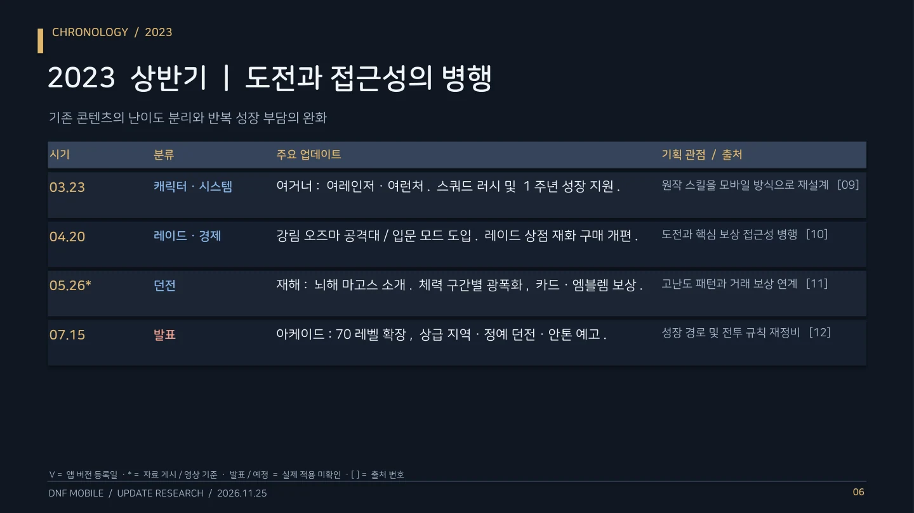
슬라이드 내용 텍스트 보기 ⌄
2023 상반기 | 도전과 접근성의 병행 기존 콘텐츠의 난이도 분리와 반복 성장 부담의 완화 DNF MOBILE / UPDATE RESEARCH / 2026.11.25 06 시기 분류 주요 업데이트 기획 관점 / 출처 03.23 캐릭터·시스템 여거너: 여레인저·여런처. 스쿼드 러시 및 1주년 성장 지원. 원작 스킬을 모바일 방식으로 재설계 [09] 04.20 레이드·경제 강림 오즈마 공격대/입문 모드 도입. 레이드 상점 재화 구매 개편. 도전과 핵심 보상 접근성 병행 [10] 05.26* 던전 재해: 뇌해 마고스 소개. 체력 구간별 광폭화, 카드·엠블렘 보상. 고난도 패턴과 거래 보상 연계 [11] 07.15 발표 아케이드: 70레벨 확장, 상급 지역·정예 던전·안톤 예고. 성장 경로 및 전투 규칙 재정비 [12] V = 앱 버전 등록일 · * = 자료 게시/영상 기준 · 발표/예정 = 실제 적용 미확인 · [ ] = 출처 번호
2023 · UPDATE HISTORY
2023 하반기 | 불의 길과 안톤
07 / 28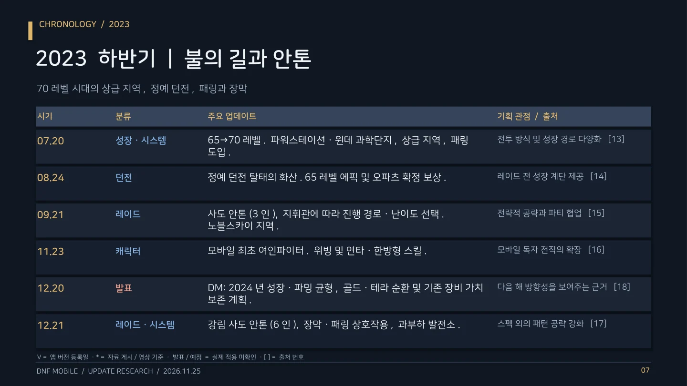
슬라이드 내용 텍스트 보기 ⌄
2023 하반기 | 불의 길과 안톤 70레벨 시대의 상급 지역, 정예 던전, 패링과 장막 DNF MOBILE / UPDATE RESEARCH / 2026.11.25 07 시기 분류 주요 업데이트 기획 관점 / 출처 07.20 성장·시스템 65→70레벨. 파워스테이션·윈데 과학단지, 상급 지역, 패링 도입. 전투 방식 및 성장 경로 다양화 [13] 08.24 던전 정예 던전 탈태의 화산. 65레벨 에픽 및 오파츠 확정 보상. 레이드 전 성장 계단 제공 [14] 09.21 레이드 사도 안톤(3인), 지휘관에 따라 진행 경로·난이도 선택. 노블스카이 지역. 전략적 공략과 파티 협업 [15] 11.23 캐릭터 모바일 최초 여인파이터. 위빙 및 연타·한방형 스킬. 모바일 독자 전직의 확장 [16] 12.20 발표 DM: 2024년 성장·파밍 균형, 골드·테라 순환 및 기존 장비 가치 보존 계획. 다음 해 방향성을 보여주는 근거 [18] 12.21 레이드·시스템 강림 사도 안톤(6인), 장막·패링 상호작용, 과부하 발전소. 스펙 외의 패턴 공략 강화 [17] V = 앱 버전 등록일 · * = 자료 게시/영상 기준 · 발표/예정 = 실제 적용 미확인 · [ ] = 출처 번호
2024 · UPDATE HISTORY
2024 상반기 | 성장 경로 다변화
08 / 28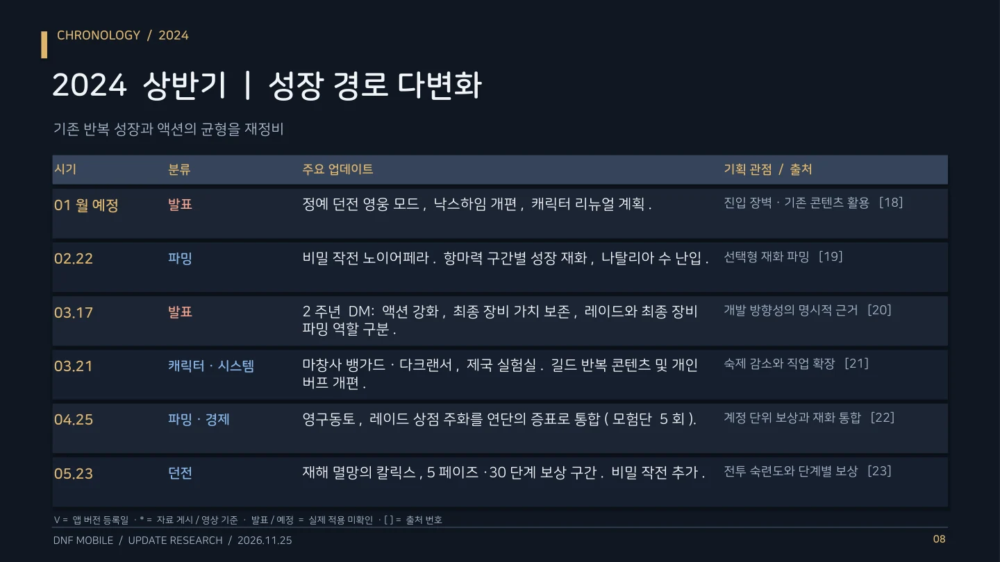
슬라이드 내용 텍스트 보기 ⌄
2024 상반기 | 성장 경로 다변화 기존 반복 성장과 액션의 균형을 재정비 DNF MOBILE / UPDATE RESEARCH / 2026.11.25 08 시기 분류 주요 업데이트 기획 관점 / 출처 01월 예정 발표 정예 던전 영웅 모드, 낙스하임 개편, 캐릭터 리뉴얼 계획. 진입 장벽·기존 콘텐츠 활용 [18] 02.22 파밍 비밀 작전 노이어페라. 항마력 구간별 성장 재화, 나탈리아 수 난입. 선택형 재화 파밍 [19] 03.17 발표 2주년 DM: 액션 강화, 최종 장비 가치 보존, 레이드와 최종 장비 파밍 역할 구분. 개발 방향성의 명시적 근거 [20] 03.21 캐릭터·시스템 마창사 뱅가드·다크랜서, 제국 실험실. 길드 반복 콘텐츠 및 개인 버프 개편. 숙제 감소와 직업 확장 [21] 04.25 파밍·경제 영구동토, 레이드 상점 주화를 연단의 증표로 통합(모험단 5회). 계정 단위 보상과 재화 통합 [22] 05.23 던전 재해 멸망의 칼릭스, 5페이즈·30단계 보상 구간. 비밀 작전 추가. 전투 숙련도와 단계별 보상 [23] V = 앱 버전 등록일 · * = 자료 게시/영상 기준 · 발표/예정 = 실제 적용 미확인 · [ ] = 출처 번호
2024 · UPDATE HISTORY
2024 하반기 | 80레벨과 2차 각성
09 / 28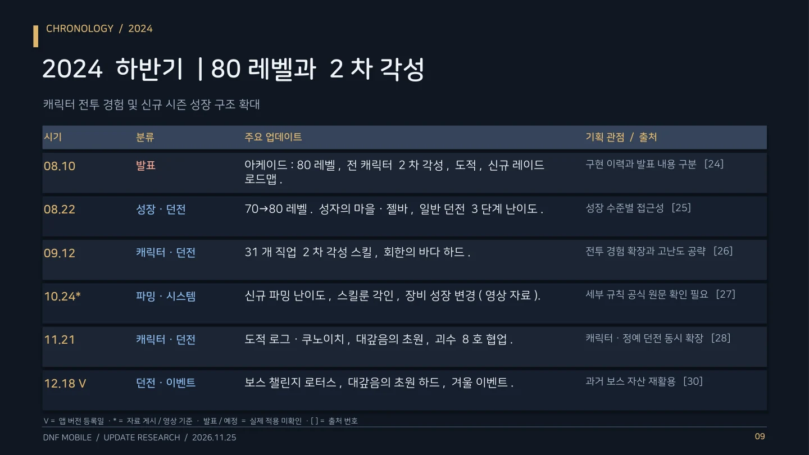
슬라이드 내용 텍스트 보기 ⌄
2024 하반기 | 80레벨과 2차 각성 캐릭터 전투 경험 및 신규 시즌 성장 구조 확대 DNF MOBILE / UPDATE RESEARCH / 2026.11.25 09 시기 분류 주요 업데이트 기획 관점 / 출처 08.10 발표 아케이드: 80레벨, 전 캐릭터 2차 각성, 도적, 신규 레이드 로드맵. 구현 이력과 발표 내용 구분 [24] 08.22 성장·던전 70→80레벨. 성자의 마을·젤바, 일반 던전 3단계 난이도. 성장 수준별 접근성 [25] 09.12 캐릭터·던전 31개 직업 2차 각성 스킬, 회한의 바다 하드. 전투 경험 확장과 고난도 공략 [26] 10.24* 파밍·시스템 신규 파밍 난이도, 스킬룬 각인, 장비 성장 변경(영상 자료). 세부 규칙 공식 원문 확인 필요 [27] 11.21 캐릭터·던전 도적 로그·쿠노이치, 대갚음의 초원, 괴수 8호 협업. 캐릭터·정예 던전 동시 확장 [28] 12.18 V 던전·이벤트 보스 챌린지 로터스, 대갚음의 초원 하드, 겨울 이벤트. 과거 보스 자산 재활용 [30] V = 앱 버전 등록일 · * = 자료 게시/영상 기준 · 발표/예정 = 실제 적용 미확인 · [ ] = 출처 번호
2025 · UPDATE HISTORY
2025 상반기 | 흑룡 레이드와 전투 확장
10 / 28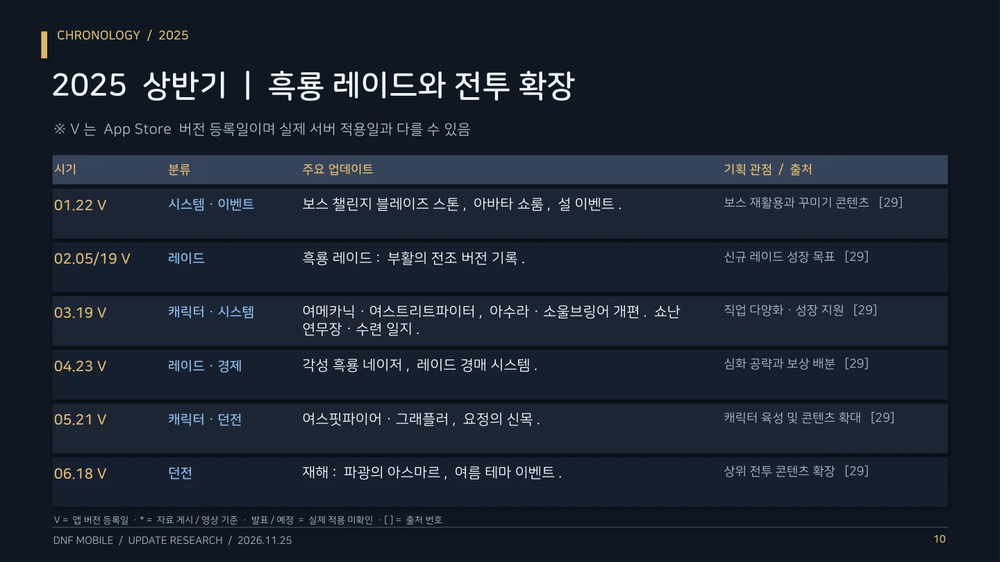
슬라이드 내용 텍스트 보기 ⌄
2025 상반기 | 흑룡 레이드와 전투 확장 ※ V는 App Store 버전 등록일이며 실제 서버 적용일과 다를 수 있음 DNF MOBILE / UPDATE RESEARCH / 2026.11.25 10 시기 분류 주요 업데이트 기획 관점 / 출처 01.22 V 시스템·이벤트 보스 챌린지 블레이즈 스톤, 아바타 쇼룸, 설 이벤트. 보스 재활용과 꾸미기 콘텐츠 [29] 02.05/19 V 레이드 흑룡 레이드: 부활의 전조 버전 기록. 신규 레이드 성장 목표 [29] 03.19 V 캐릭터·시스템 여메카닉·여스트리트파이터, 아수라·소울브링어 개편. 쇼난 연무장·수련 일지. 직업 다양화·성장 지원 [29] 04.23 V 레이드·경제 각성 흑룡 네이저, 레이드 경매 시스템. 심화 공략과 보상 배분 [29] 05.21 V 캐릭터·던전 여스핏파이어·그래플러, 요정의 신목. 캐릭터 육성 및 콘텐츠 확대 [29] 06.18 V 던전 재해: 파광의 아스마르, 여름 테마 이벤트. 상위 전투 콘텐츠 확장 [29] V = 앱 버전 등록일 · * = 자료 게시/영상 기준 · 발표/예정 = 실제 적용 미확인 · [ ] = 출처 번호
2025 · UPDATE HISTORY
2025 하반기 | 죽은 자의 성
11 / 28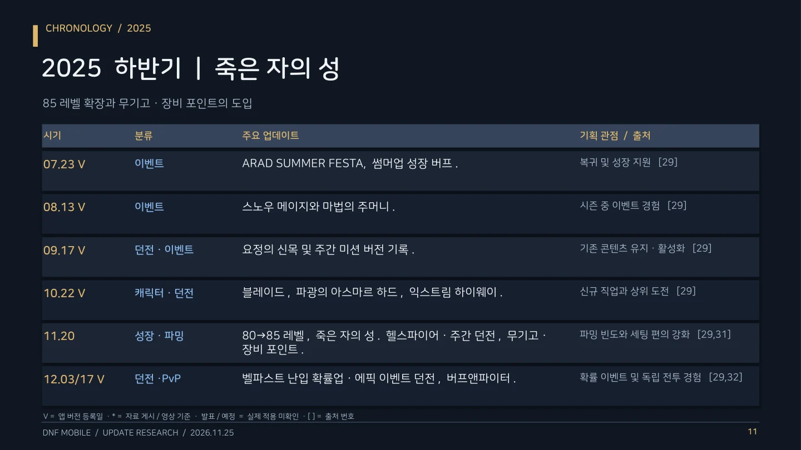
슬라이드 내용 텍스트 보기 ⌄
2025 하반기 | 죽은 자의 성 85레벨 확장과 무기고·장비 포인트의 도입 DNF MOBILE / UPDATE RESEARCH / 2026.11.25 11 시기 분류 주요 업데이트 기획 관점 / 출처 07.23 V 이벤트 ARAD SUMMER FESTA, 썸머업 성장 버프. 복귀 및 성장 지원 [29] 08.13 V 이벤트 스노우 메이지와 마법의 주머니. 시즌 중 이벤트 경험 [29] 09.17 V 던전·이벤트 요정의 신목 및 주간 미션 버전 기록. 기존 콘텐츠 유지·활성화 [29] 10.22 V 캐릭터·던전 블레이드, 파광의 아스마르 하드, 익스트림 하이웨이. 신규 직업과 상위 도전 [29] 11.20 성장·파밍 80→85레벨, 죽은 자의 성. 헬스파이어·주간 던전, 무기고·장비 포인트. 파밍 빈도와 세팅 편의 강화 [29,31] 12.03/17 V 던전·PvP 벨파스트 난입 확률업·에픽 이벤트 던전, 버프앤파이터. 확률 이벤트 및 독립 전투 경험 [29,32] V = 앱 버전 등록일 · * = 자료 게시/영상 기준 · 발표/예정 = 실제 적용 미확인 · [ ] = 출처 번호
2026 · UPDATE HISTORY
2026 상반기 | 85레벨 엔드 콘텐츠
12 / 28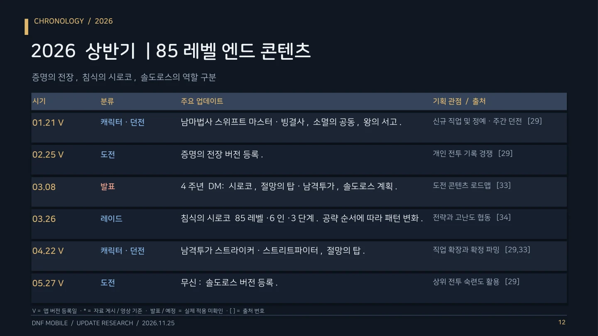
슬라이드 내용 텍스트 보기 ⌄
2026 상반기 | 85레벨 엔드 콘텐츠 증명의 전장, 침식의 시로코, 솔도로스의 역할 구분 DNF MOBILE / UPDATE RESEARCH / 2026.11.25 12 시기 분류 주요 업데이트 기획 관점 / 출처 01.21 V 캐릭터·던전 남마법사 스위프트 마스터·빙결사, 소멸의 공동, 왕의 서고. 신규 직업 및 정예·주간 던전 [29] 02.25 V 도전 증명의 전장 버전 등록. 개인 전투 기록 경쟁 [29] 03.08 발표 4주년 DM: 시로코, 절망의 탑·남격투가, 솔도로스 계획. 도전 콘텐츠 로드맵 [33] 03.26 레이드 침식의 시로코 85레벨·6인·3단계. 공략 순서에 따라 패턴 변화. 전략과 고난도 협동 [34] 04.22 V 캐릭터·던전 남격투가 스트라이커·스트리트파이터, 절망의 탑. 직업 확장과 확정 파밍 [29,33] 05.27 V 도전 무신: 솔도로스 버전 등록. 상위 전투 숙련도 활용 [29] V = 앱 버전 등록일 · * = 자료 게시/영상 기준 · 발표/예정 = 실제 적용 미확인 · [ ] = 출처 번호
2026 · UPDATE HISTORY
2026 여름 | 2.0 선언과 마계
13 / 28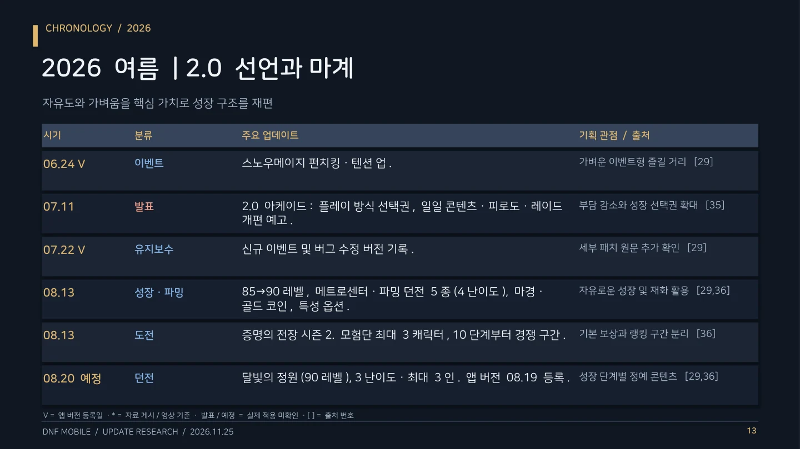
슬라이드 내용 텍스트 보기 ⌄
2026 여름 | 2.0 선언과 마계 자유도와 가벼움을 핵심 가치로 성장 구조를 재편 DNF MOBILE / UPDATE RESEARCH / 2026.11.25 13 시기 분류 주요 업데이트 기획 관점 / 출처 06.24 V 이벤트 스노우메이지 펀치킹·텐션 업. 가벼운 이벤트형 즐길 거리 [29] 07.11 발표 2.0 아케이드: 플레이 방식 선택권, 일일 콘텐츠·피로도·레이드 개편 예고. 부담 감소와 성장 선택권 확대 [35] 07.22 V 유지보수 신규 이벤트 및 버그 수정 버전 기록. 세부 패치 원문 추가 확인 [29] 08.13 성장·파밍 85→90레벨, 메트로센터·파밍 던전 5종(4난이도), 마경·골드 코인, 특성 옵션. 자유로운 성장 및 재화 활용 [29,36] 08.13 도전 증명의 전장 시즌2. 모험단 최대 3캐릭터, 10단계부터 경쟁 구간. 기본 보상과 랭킹 구간 분리 [36] 08.20 예정 던전 달빛의 정원(90레벨), 3난이도·최대 3인. 앱 버전 08.19 등록. 성장 단계별 정예 콘텐츠 [29,36] V = 앱 버전 등록일 · * = 자료 게시/영상 기준 · 발표/예정 = 실제 적용 미확인 · [ ] = 출처 번호
2026 · UPDATE HISTORY
2026 가을 | 루크·정벌과 11월 사전 공개
14 / 28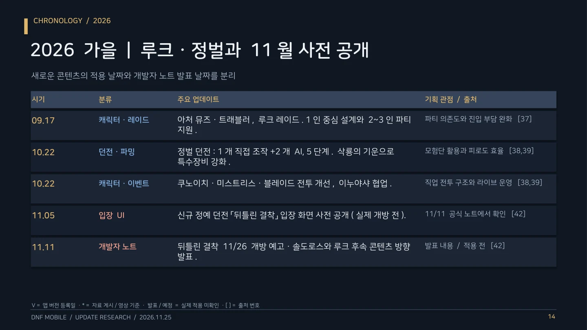
슬라이드 내용 텍스트 보기 ⌄
2026 가을 | 루크·정벌과 11월 사전 공개 새로운 콘텐츠의 적용 날짜와 개발자 노트 발표 날짜를 분리 DNF MOBILE / UPDATE RESEARCH / 2026.11.25 14 시기 분류 주요 업데이트 기획 관점 / 출처 09.17 캐릭터·레이드 아처 뮤즈·트래블러, 루크 레이드. 1인 중심 설계와 2~3인 파티 지원. 파티 의존도와 진입 부담 완화 [37] 10.22 던전·파밍 정벌 던전: 1개 직접 조작+2개 AI, 5단계. 삭룡의 기운으로 특수장비 강화. 모험단 활용과 피로도 효율 [38,39] 10.22 캐릭터·이벤트 쿠노이치·미스트리스·블레이드 전투 개선, 이누야샤 협업. 직업 전투 구조와 라이브 운영 [38,39] 11.05 입장 UI 신규 정예 던전 「뒤틀린 결착」 입장 화면 사전 공개(실제 개방 전). 11/11 공식 노트에서 확인 [42] 11.11 개발자 노트 뒤틀린 결착 11/26 개방 예고·솔도로스와 루크 후속 콘텐츠 방향 발표. 발표 내용 / 적용 전 [42] V = 앱 버전 등록일 · * = 자료 게시/영상 기준 · 발표/예정 = 실제 적용 미확인 · [ ] = 출처 번호
2026 · UPDATE HISTORY
2026 11월 | 정예 던전 후속 업데이트
15 / 28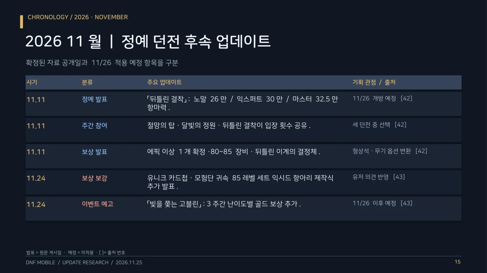
슬라이드 내용 텍스트 보기 ⌄
2026 11월 | 정예 던전 후속 업데이트 확정된 자료 공개일과 11/26 적용 예정 항목을 구분 DNF MOBILE / UPDATE RESEARCH / 2026.11.25 15 시기 분류 주요 업데이트 기획 관점 / 출처 11.11 정예 발표 「뒤틀린 결착」: 노말 26만 / 익스퍼트 30만 / 마스터 32.5만 항마력. 11/26 개방 예정 [42] 11.11 주간 참여 절망의 탑·달빛의 정원·뒤틀린 결착이 입장 횟수 공유. 세 던전 중 선택 [42] 11.11 보상 발표 에픽 이상 1개 확정·80~85 장비·뒤틀린 이계의 결정체. 형상석·무기 옵션 변환 [42] 11.24 보상 보강 유니크 카드첩·모험단 귀속 85레벨 세트 익시드 항아리 제작식 추가 발표. 유저 의견 반영 [43] 11.24 이벤트 예고 「빛을 쫓는 고블린」: 3주간 난이도별 골드 보상 추가. 11/26 이후 예정 [43] 발표=원문 게시일 · 예정=미적용 · [ ]=출처 번호
2026 · UPDATE HISTORY
2026 11~12월 | 운영·편의성 변경 예고
16 / 28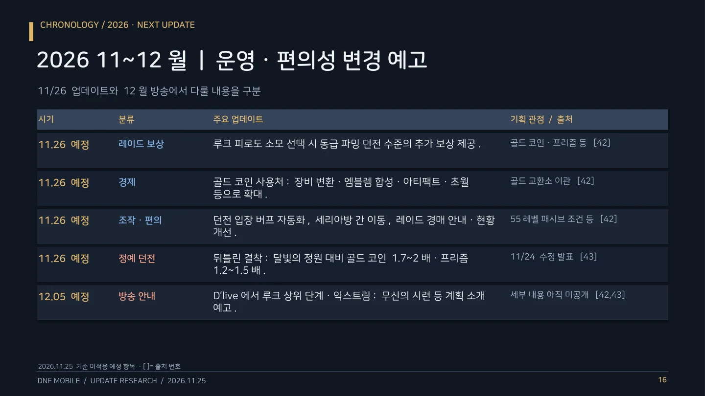
슬라이드 내용 텍스트 보기 ⌄
2026 11~12월 | 운영·편의성 변경 예고 11/26 업데이트와 12월 방송에서 다룰 내용을 구분 DNF MOBILE / UPDATE RESEARCH / 2026.11.25 16 시기 분류 주요 업데이트 기획 관점 / 출처 11.26 예정 레이드 보상 루크 피로도 소모 선택 시 동급 파밍 던전 수준의 추가 보상 제공. 골드 코인·프리즘 등 [42] 11.26 예정 경제 골드 코인 사용처: 장비 변환·엠블렘 합성·아티팩트·초월 등으로 확대. 골드 교환소 이관 [42] 11.26 예정 조작·편의 던전 입장 버프 자동화, 세리아방 간 이동, 레이드 경매 안내·현황 개선. 55레벨 패시브 조건 등 [42] 11.26 예정 정예 던전 뒤틀린 결착: 달빛의 정원 대비 골드 코인 1.7~2배·프리즘 1.2~1.5배. 11/24 수정 발표 [43] 12.05 예정 방송 안내 D’live에서 루크 상위 단계·익스트림: 무신의 시련 등 계획 소개 예고. 세부 내용 아직 미공개 [42,43] 2026.11.25 기준 미적용 예정 항목 · [ ]=출처 번호
2026 · UPDATE HISTORY
신규 정예 「뒤틀린 결착」 시스템 상세
17 / 28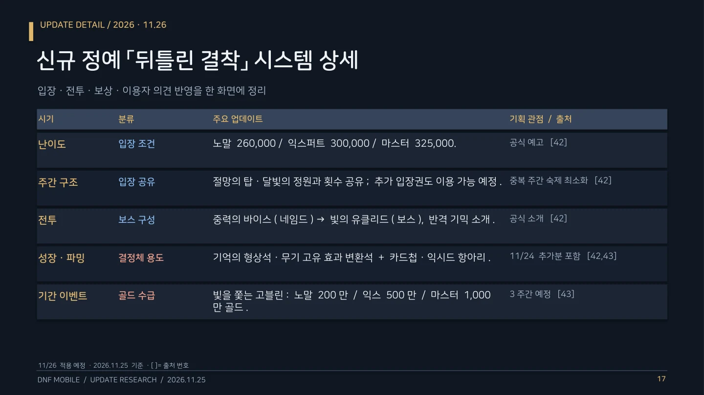
슬라이드 내용 텍스트 보기 ⌄
신규 정예 「뒤틀린 결착」 시스템 상세 입장·전투·보상·이용자 의견 반영을 한 화면에 정리 DNF MOBILE / UPDATE RESEARCH / 2026.11.25 17 시기 분류 주요 업데이트 기획 관점 / 출처 난이도 입장 조건 노말 260,000 / 익스퍼트 300,000 / 마스터 325,000. 공식 예고 [42] 주간 구조 입장 공유 절망의 탑·달빛의 정원과 횟수 공유; 추가 입장권도 이용 가능 예정. 중복 주간 숙제 최소화 [42] 전투 보스 구성 중력의 바이스(네임드) → 빛의 유클리드(보스), 반격 기믹 소개. 공식 소개 [42] 성장·파밍 결정체 용도 기억의 형상석·무기 고유 효과 변환석 + 카드첩·익시드 항아리. 11/24 추가분 포함 [42,43] 기간 이벤트 골드 수급 빛을 쫓는 고블린: 노말 200만 / 익스 500만 / 마스터 1,000만 골드. 3주간 예정 [43] 11/26 적용 예정 · 2026.11.25 기준 · [ ]=출처 번호
분야별 분석 · UPDATE HISTORY
던전 콘텐츠 변천사
18 / 28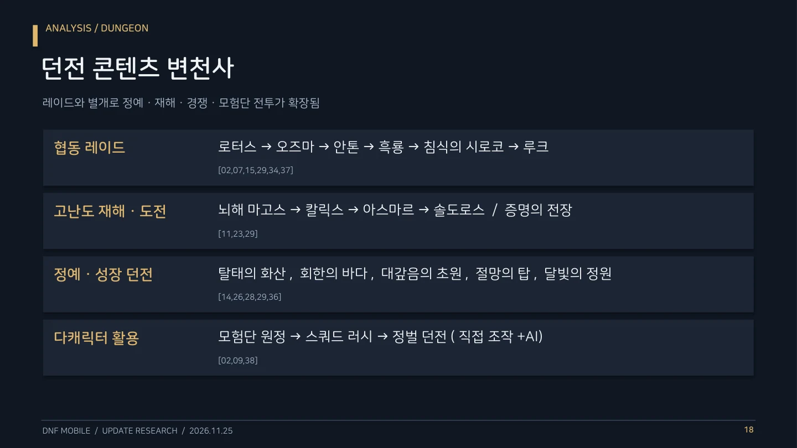
슬라이드 내용 텍스트 보기 ⌄
던전 콘텐츠 변천사 레이드와 별개로 정예·재해·경쟁·모험단 전투가 확장됨 DNF MOBILE / UPDATE RESEARCH / 2026.11.25 18 협동 레이드 로터스 → 오즈마 → 안톤 → 흑룡 → 침식의 시로코 → 루크 [02,07,15,29,34,37] 고난도 재해·도전 뇌해 마고스 → 칼릭스 → 아스마르 → 솔도로스 / 증명의 전장 [11,23,29] 정예·성장 던전 탈태의 화산, 회한의 바다, 대갚음의 초원, 절망의 탑, 달빛의 정원 [14,26,28,29,36] 다캐릭터 활용 모험단 원정 → 스쿼드 러시 → 정벌 던전(직접 조작+AI) [02,09,38]
분야별 분석 · UPDATE HISTORY
캐릭터 기획 변천사
19 / 28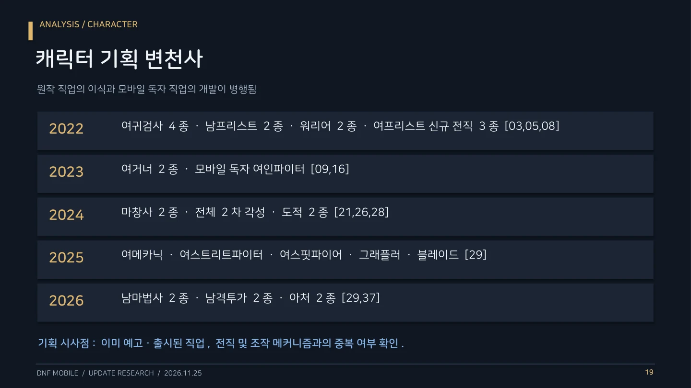
슬라이드 내용 텍스트 보기 ⌄
캐릭터 기획 변천사 원작 직업의 이식과 모바일 독자 직업의 개발이 병행됨 DNF MOBILE / UPDATE RESEARCH / 2026.11.25 19 2022 여귀검사 4종 · 남프리스트 2종 · 워리어 2종 · 여프리스트 신규 전직 3종 [03,05,08] 2023 여거너 2종 · 모바일 독자 여인파이터 [09,16] 2024 마창사 2종 · 전체 2차 각성 · 도적 2종 [21,26,28] 2025 여메카닉 · 여스트리트파이터 · 여스핏파이어 · 그래플러 · 블레이드 [29] 2026 남마법사 2종 · 남격투가 2종 · 아처 2종 [29,37] 기획 시사점: 이미 예고·출시된 직업, 전직 및 조작 메커니즘과의 중복 여부 확인.
분야별 분석 · UPDATE HISTORY
파밍·경제·시스템 변천사
20 / 28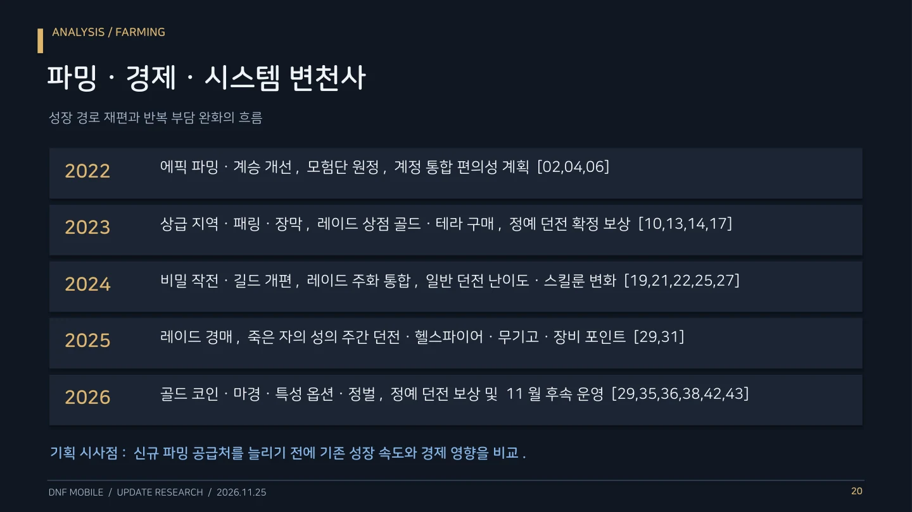
슬라이드 내용 텍스트 보기 ⌄
파밍·경제·시스템 변천사 성장 경로 재편과 반복 부담 완화의 흐름 DNF MOBILE / UPDATE RESEARCH / 2026.11.25 20 2022 에픽 파밍·계승 개선, 모험단 원정, 계정 통합 편의성 계획 [02,04,06] 2023 상급 지역·패링·장막, 레이드 상점 골드·테라 구매, 정예 던전 확정 보상 [10,13,14,17] 2024 비밀 작전·길드 개편, 레이드 주화 통합, 일반 던전 난이도·스킬룬 변화 [19,21,22,25,27] 2025 레이드 경매, 죽은 자의 성의 주간 던전·헬스파이어·무기고·장비 포인트 [29,31] 2026 골드 코인·마경·특성 옵션·정벌, 정예 던전 보상 및 11월 후속 운영 [29,35,36,38,42,43] 기획 시사점: 신규 파밍 공급처를 늘리기 전에 기존 성장 속도와 경제 영향을 비교.
분야별 분석 · UPDATE HISTORY
공개된 개발 방향의 변화
21 / 28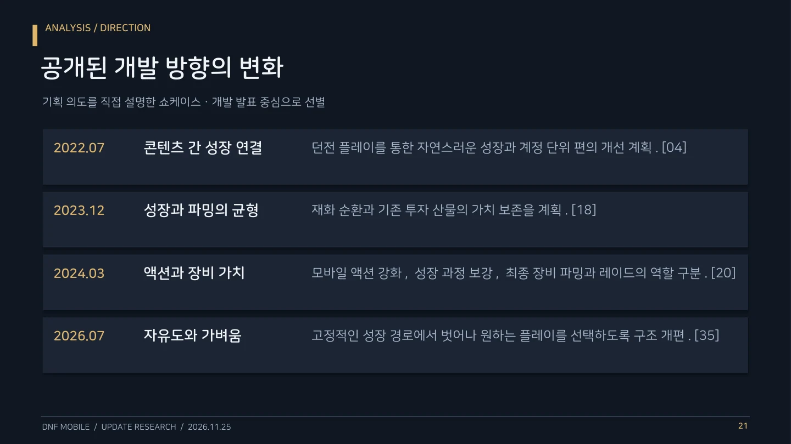
슬라이드 내용 텍스트 보기 ⌄
공개된 개발 방향의 변화 기획 의도를 직접 설명한 쇼케이스·개발 발표 중심으로 선별 DNF MOBILE / UPDATE RESEARCH / 2026.11.25 21 2022.07 콘텐츠 간 성장 연결 던전 플레이를 통한 자연스러운 성장과 계정 단위 편의 개선 계획. [04] 2023.12 성장과 파밍의 균형 재화 순환과 기존 투자 산물의 가치 보존을 계획. [18] 2024.03 액션과 장비 가치 모바일 액션 강화, 성장 과정 보강, 최종 장비 파밍과 레이드의 역할 구분. [20] 2026.07 자유도와 가벼움 고정적인 성장 경로에서 벗어나 원하는 플레이를 선택하도록 구조 개편. [35]
분야별 분석 · UPDATE HISTORY
신규 기획 전 반드시 비교할 콘텐츠
22 / 28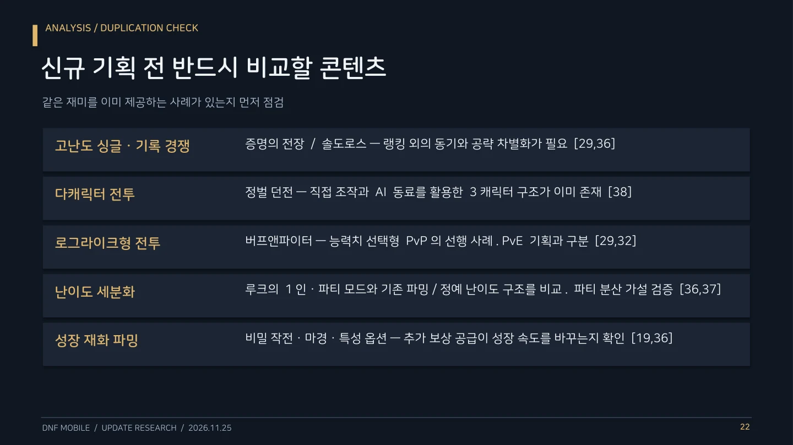
슬라이드 내용 텍스트 보기 ⌄
신규 기획 전 반드시 비교할 콘텐츠 같은 재미를 이미 제공하는 사례가 있는지 먼저 점검 DNF MOBILE / UPDATE RESEARCH / 2026.11.25 22 고난도 싱글·기록 경쟁 증명의 전장 / 솔도로스 — 랭킹 외의 동기와 공략 차별화가 필요 [29,36] 다캐릭터 전투 정벌 던전 — 직접 조작과 AI 동료를 활용한 3캐릭터 구조가 이미 존재 [38] 로그라이크형 전투 버프앤파이터 — 능력치 선택형 PvP의 선행 사례. PvE 기획과 구분 [29,32] 난이도 세분화 루크의 1인·파티 모드와 기존 파밍/정예 난이도 구조를 비교. 파티 분산 가설 검증 [36,37] 성장 재화 파밍 비밀 작전·마경·특성 옵션 — 추가 보상 공급이 성장 속도를 바꾸는지 확인 [19,36]
분야별 분석 · UPDATE HISTORY
추가로 확보해야 하는 자료
23 / 28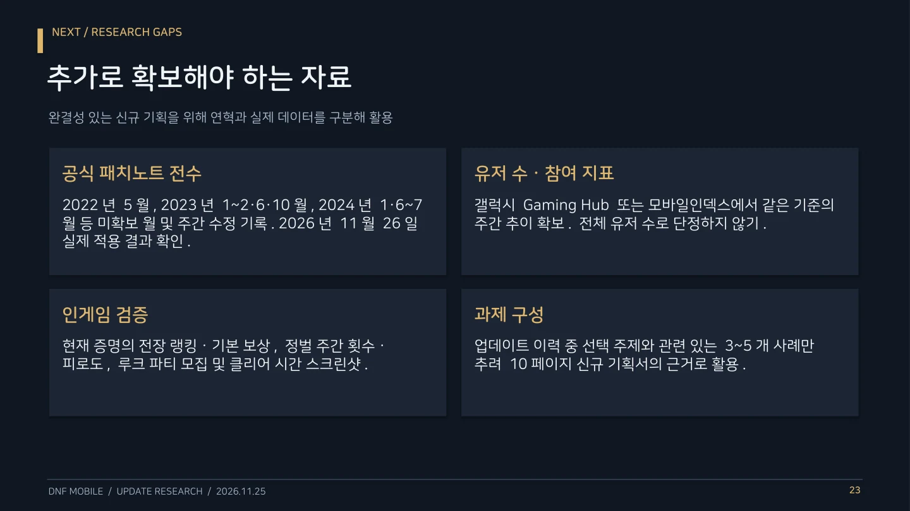
슬라이드 내용 텍스트 보기 ⌄
추가로 확보해야 하는 자료 완결성 있는 신규 기획을 위해 연혁과 실제 데이터를 구분해 활용 DNF MOBILE / UPDATE RESEARCH / 2026.11.25 23 공식 패치노트 전수 2022년 5월, 2023년 1~2·6·10월, 2024년 1·6~7월 등 미확보 월 및 주간 수정 기록. 2026년 11월 26일 실제 적용 결과 확인. 유저 수·참여 지표 갤럭시 Gaming Hub 또는 모바일인덱스에서 같은 기준의 주간 추이 확보. 전체 유저 수로 단정하지 않기. 인게임 검증 현재 증명의 전장 랭킹·기본 보상, 정벌 주간 횟수·피로도, 루크 파티 모집 및 클리어 시간 스크린샷. 과제 구성 업데이트 이력 중 선택 주제와 관련 있는 3~5개 사례만 추려 10페이지 신규 기획서의 근거로 활용.
출처 · UPDATE HISTORY
출처 목록 1 / 5
24 / 28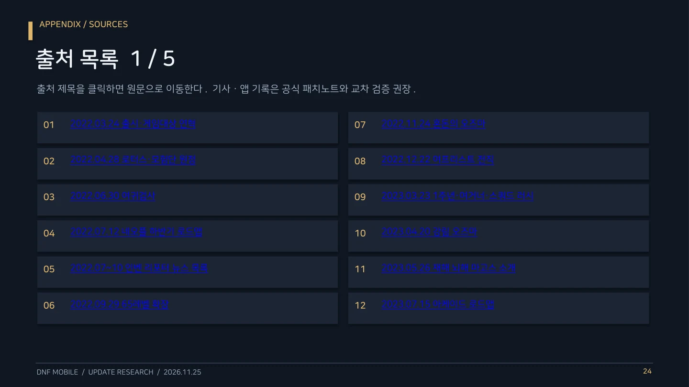
슬라이드 내용 텍스트 보기 ⌄
출처 목록 1 / 5 출처 제목을 클릭하면 원문으로 이동한다. 기사·앱 기록은 공식 패치노트와 교차 검증 권장. DNF MOBILE / UPDATE RESEARCH / 2026.11.25 24 01 2022.03.24 출시·게임대상 연혁 02 2022.04.28 로터스·모험단 원정 03 2022.06.30 여귀검사 04 2022.07.12 네오플 하반기 로드맵 05 2022.07~10 인벤 리포터 뉴스 목록 06 2022.09.29 65레벨 확장 07 2022.11.24 혼돈의 오즈마 08 2022.12.22 여프리스트 전직 09 2023.03.23 1주년·여거너·스쿼드 러시 10 2023.04.20 강림 오즈마 11 2023.05.26 재해 뇌해 마고스 소개 12 2023.07.15 아케이드 로드맵
출처 · UPDATE HISTORY
출처 목록 2 / 5
25 / 28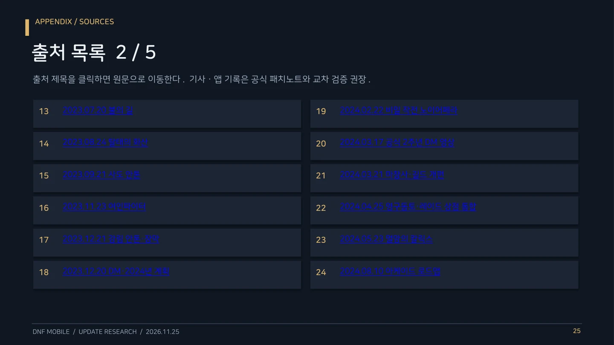
슬라이드 내용 텍스트 보기 ⌄
출처 목록 2 / 5 출처 제목을 클릭하면 원문으로 이동한다. 기사·앱 기록은 공식 패치노트와 교차 검증 권장. DNF MOBILE / UPDATE RESEARCH / 2026.11.25 25 13 2023.07.20 불의 길 14 2023.08.24 탈태의 화산 15 2023.09.21 사도 안톤 16 2023.11.23 여인파이터 17 2023.12.21 강림 안톤·장막 18 2023.12.20 DM·2024년 계획 19 2024.02.22 비밀 작전 노이어페라 20 2024.03.17 공식 2주년 DM 영상 21 2024.03.21 마창사·길드 개편 22 2024.04.25 영구동토·레이드 상점 통합 23 2024.05.23 멸망의 칼릭스 24 2024.08.10 아케이드 로드맵
출처 · UPDATE HISTORY
출처 목록 3 / 5
26 / 28슬라이드 내용 텍스트 보기 ⌄
출처 목록 3 / 5 출처 제목을 클릭하면 원문으로 이동한다. 기사·앱 기록은 공식 패치노트와 교차 검증 권장. DNF MOBILE / UPDATE RESEARCH / 2026.11.25 26 25 2024.08.22 80레벨 확장 26 2024.09.12 전 직업 2차 각성 27 2024.10.24 업데이트 영상 요약(비공식) 28 2024.11.21 도적·대갚음의 초원 29 2024.12~2026.09 퍼블리셔 App Store 버전 기록 30 2024.12 버전 기록(iPad) 31 2025.11.20 죽은 자의 성 32 2025.11.08 쇼케이스·버프앤파이터 예고 33 2026.03.08 4주년 DM 34 2026.03.26 넥슨 뉴스룸 침식의 시로코 35 2026.07.11 아케이드 2.0 발표 36 2026.08.13 마계·증명의 전장 시즌2
출처 · UPDATE HISTORY
출처 목록 4 / 5
27 / 28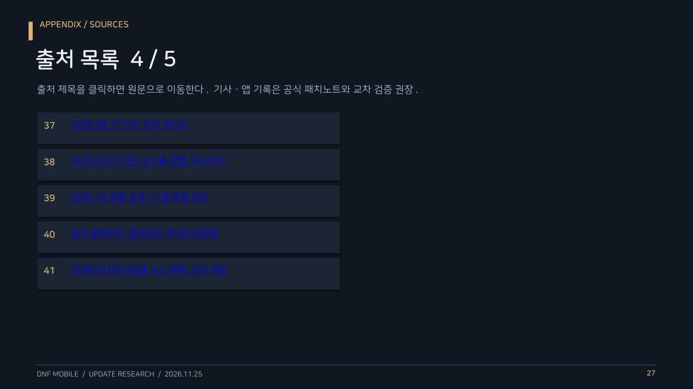
슬라이드 내용 텍스트 보기 ⌄
출처 목록 4 / 5 출처 제목을 클릭하면 원문으로 이동한다. 기사·앱 기록은 공식 패치노트와 교차 검증 권장. DNF MOBILE / UPDATE RESEARCH / 2026.11.25 27 37 2026.09.17 아처·루크 레이드 38 2026.10.22 넥슨 뉴스룸 정벌·이누야샤 39 2026.10 정벌 상세·11월 예정 변경 40 공식 홈페이지·업데이트 게시판 확인용 41 2026.04.06 네오플 뉴스 목록·조직 개편
출처 · UPDATE HISTORY
출처 목록 5 / 5
28 / 28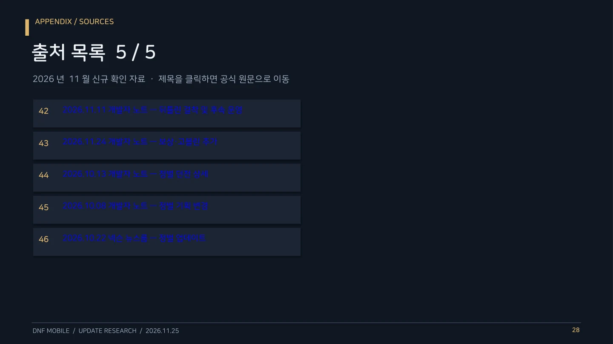
슬라이드 내용 텍스트 보기 ⌄
출처 목록 5 / 5 2026년 11월 신규 확인 자료 · 제목을 클릭하면 공식 원문으로 이동 DNF MOBILE / UPDATE RESEARCH / 2026.11.25 28 42 2026.11.11 개발자 노트 — 뒤틀린 결착 및 후속 운영 43 2026.11.24 개발자 노트 — 보상·고블린 추가 44 2026.10.13 개발자 노트 — 정벌 던전 상세 45 2026.10.08 개발자 노트 — 정벌 기획 변경 46 2026.10.22 넥슨 뉴스룸 — 정벌 업데이트
검색 결과가 없어. 다른 검색어를 입력해 봐.